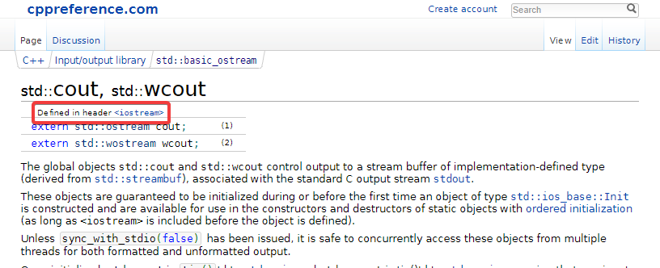

Hello World
Nous allons maintenant enfin pouvoir coder ! Dans la suite de ce chapitre, vous verrez comment :
- écrire un programme,
- déclarer des variables,
- écrire sur la sortie standard,
- lire sur l’entrée standard,
- définir des fonctions,
- utiliser les structures de contrôle (conditions, boucles, switch, etc.),
- créer des tableaux et des chaînes de caractères,
- utiliser des références.
Ça fait beaucoup hein ? 😈
En réalité, comme vous avez déjà fait du C et du Java, il y a pas mal de choses que vous connaissez déjà. Le C++ introduit quelques subtilités, mais nous insisterons suffisamment dessus pour que vous les reteniez sans problème 🙂
Mise en place
Ouvrir un fichier 1-hello_world.cpp.
Pour votre premier programme, on ne va pas trop faire dans l’originalité, il s’agira d’un Hello World. Vous l’avez d’ailleurs déjà probablement vu dans le chapitre précédent, pour tester vos outils.
La fonction main
Tout d’abord, commençons par écrire la fonction qui est appelée lorsqu’on lance le programme. On parle de point d’entrée. Comme en C, cette fonction doit s’appeler main et renvoyer une valeur de type int. Pour ce premier exercice, nous n’aurons pas besoin de lui fournir d’arguments.
int main()
{
return 0;
}La valeur de retour du main indique si le programme s’est terminé sans erreur. Si tout se passe bien, il faut retourner 0. N’importe quelle autre valeur indique une erreur.
Pour compiler votre programme, commencez par ouvrir un terminal (vous pouvez le faire directement dans l’interface de VSCode).
Placez-vous dans le répertoire chap-01 avec cd, puis taper la commande:
g++ -std=c++17 -o hello-world 1-hello_world.cppL’option -std sert à spécifier la version du langage qu’on veut utiliser, dans ce cours nous utiliserons la version 2017 du standard.
L’option -o permet de spécifier le nom du programme généré par le compilateur.
Tous les autres arguments correspondent aux chemins des fichiers .cpp que l’on veut compiler.
Pour le moment, il n’y en a qu’un seul, le fichier 1-hello_world.cpp.
Lancez maintenant votre programme pour vérifier qu’il s’exécute sans erreur.
Ecrire sur la sortie standard
L’instruction ci-dessous permet d’afficher la chaîne de caractères "Hello World"! sur la sortie standard du programme.
std::cout << "Hello World!" << std::endl;Décortiquons la ensemble…
std::
En C++, il est possible de définir des espaces de noms, ou namespaces.
std fait référence au namespace utilisé pour la librairie standard.
Si on écrit std::cout, c’est donc pour référencer un symbole nommé cout défini par la librairie standard.
Les librairies développées en C++ définissent généralement des namespaces pour contenir leurs symboles. Cela permet d’éviter des conflits de noms dans les programmes qui les utilisent. Par exemple, Ogre définit ses symboles dans Ogre::, la SFML dans sf::, etc.
Ce problème existe aussi en C bien sûr, et pour y pallier, certaines APIs préfixent tous leurs symboles (la SDL par exemple)… Ce n’est pas très pratique, d’où la bonne idée d’avoir introduit les namespaces en C++.
cout
Il s’agit de la variable globale contenant le flux pour écrire sur la sortie standard du programme. Le c indique “console” et le out indique “sortie”. Par symétrie, on fera référence au flux pour l’entrée standard avec cin.
<<
Il s’agit d’un opérateur, un peu comme + ou %. Si on utilise << entre une variable de flux et une chaîne de caractères, cette dernière sera écrite dans le flux.
"Hello World!"
Une chaîne de caractères, comme en C.
endl
Cette variable permet d’écrire le caractère de fin de ligne \n (endl pour “end of line”) dans le flux. Il permet également de forcer son flush.
En C, on a dû vous dire expliquer qu’il fallait toujours mettre des \n à la fin de vos écritures avec printf, car cela permet d’être sûr que tout est bien écrit dans la console. En effet, les programmes n’écrivent pas directement dans la console. Ils écrivent d’abord chaque caractère dans un espace-mémoire (généralement aussi appelé espace tampon), puis au moment opportun comme lors d’un saut de ligne, le programme transfère tout le bloc de texte en une seule fois dans la console (on parle de flush).
En C++, \n ne suffit pas à faire le flush. C’est en plaçant la valeur endl dans le flux que l’on indique qu’on veut à la fois un saut de ligne et l’opération de flush.
Ajoutez l’instruction précédente dans votre fonction main et essayez de recompiler votre programme.
Vous devriez obtenir des erreurs de ce style :
blabla error ##: 'cout': is not a member of 'std' blabla
blabla message : see declaration of 'std' blabla
blabla error ##: 'cout': undeclared identifier blabla
blabla error ##: 'endl': is not a member of 'std' blabla
blabla message : see declaration of 'std' blabla
blabla error ##: 'endl': undeclared identifier blablaLe premier message indique que le compilateur ne trouve aucun symbole nommé cout dans le namespace std. Eh bien oui, le C++, c’est comme le C. Le compilateur est un peu bêbête, et il faut tout lui indiquer, même où trouver les symboles de la librairie standard.
Allez sur
ce site et recherchez cout. Cela devrait vous permettre de déterminer dans quel header la fonction est déclarée, afin d’ajouter la directive d’inclusion correspondante au fichier.
Vous devriez arriver sur
cette page, vous indiquant que le header à référencer est <iostream> :
Placez le code suivant dans votre fichier :
#include <iostream>
int main()
{
std::cout << "Hello World!" << std::endl;
return 0;
}Vous devriez maintenant pouvoir compiler le programme sans souci. Exécutez-le et vérifiez que vous obtenez bien un résultat similaire à celui-ci :
Hello World!
The program '[2288] 1-hello_world' has exited with code 0 (0x0).Par ailleurs, sachez qu’il est possible de chaîner l’opérateur << et de lui fournir d’autres éléments que des chaînes de caractères.
Vous pouvez donc écrire des choses comme :
std::cout << "I have " << 7 << " dogs." << std::endl;